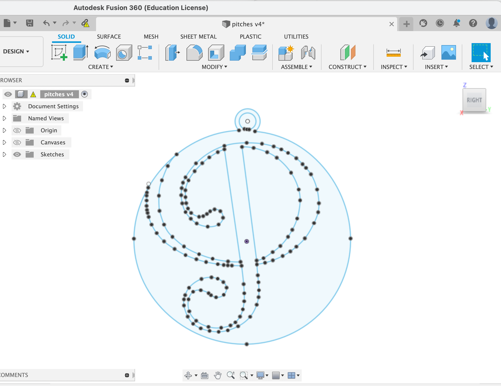
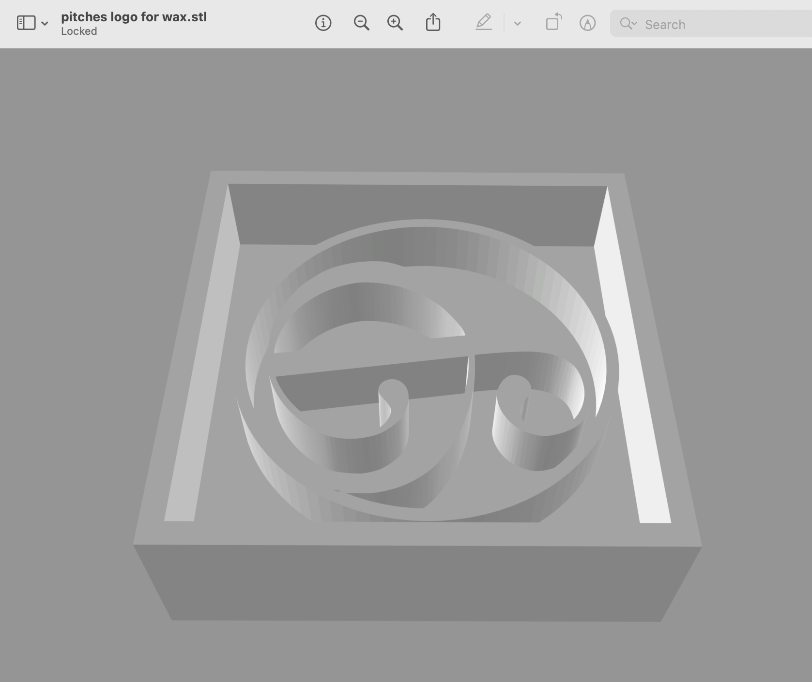
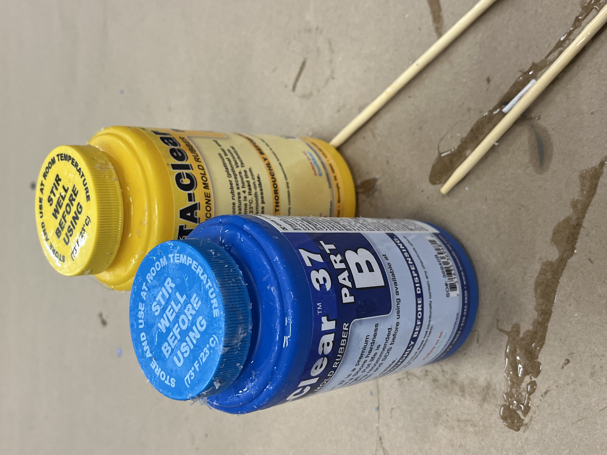
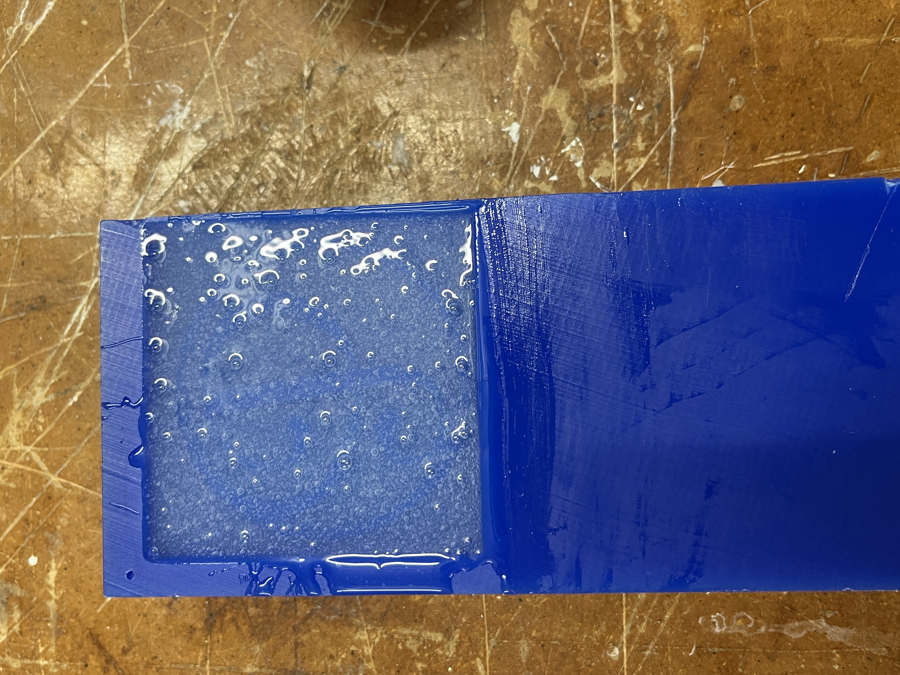
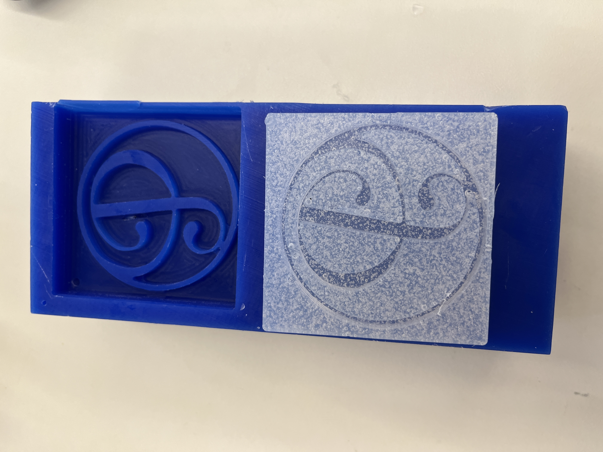

<div class="container-fluid">
<h3 style="text-align: center;"> Week 8: CNC Milling, Molding & Casting </h3>
<h4 style="color: black;background-color:#6EDCF7;"> Pitches Logo Mold </h4>

<p>For this week’s assignment I knew I wanted to take advantage of the food-safe silicone and make some sweet treats for my friends. This also felt like the perfect week to make something for my a cappella group - the <a href="https://www.pitches.org/">Pitches!</a> I decided to use the SRM 20 to cut a wax mold of our logo. Conveniently, I had already traced our logo in Fusion way back during laser cutting week, so I pulled up that trace and made some edits to make sure it would make for a good smooth mold. I extruded it and added walls to contain the mold and exported my finished stl file. </p>
<img src="../08/srmscreenshot.png" alt="SRM 20 setup" style="float:right;width:300px;height:auto;"><p>
</p><p>From there, I went to the SRM 20 and milled my roughing pass! It took much longer than I expected but otherwise went really well! It’s a bit scary because when the wax starts piling up you can’t see what’s happening! So then I switched to a 1/16” and end mill and started my finishing pass. This took SO long and actually right towards the end (maybe 3 hours in) the end mill just fell out. It ended up being fine because the roughing pass had done a good enough job that you couldn’t notice where it didn’t complete the finishing pass but I was confused and a bit concerned that it stopped. I talked to some classmates and this appears to have happened to some of them as well! We talked to Gabby and she thought maybe the end mill was just slowly loosening over time because either we didn’t tighten it enough initially or something about our design was making it get caught. Regardless, I was very happy that my wax came out so well but I definitely want to figure out what to do to avoid this from happening again in case it actually ruins my mold next time (or just makes me start over). It’s a bit scary just because I couldn’t figure out a way to start in the middle if it had broken at an important place. </p>
<center>
<img src="../08/excesswax.JPG" alt="Excess Wax" style="width:280px;height:auto;">

 </center>
<p>I pushed ahead and went to make a mold from my wax positive! The food-safe silicone was in short supply but in a miraculous moment I stumbled upon a tiny amount left in a mislabeled box. I mixed the parts and poured it in! After leaving it for a day, I came back and popped out my finished mold and it was perfect! </p>

<p>I couldn’t wait to try out my mold so I (perhaps a little foolishly) ran to cvs and bought an exorbitant amount of chocolate in the hopes of making chocolates for my a cappella group. Tragically, this was much easier said than done because my mold had such fine lines that regular melted chocolate couldn’t hold enough. Every time I tried to break the hardened chocolate out of the mold it would just crack into a ton of pieces with no chance of reassembly. I think I could make this work if I use molding chocolate because I’ve baked with molding chocolate before and it’s so much sturdier, so I will certainly come back to this some time and get my chocolates!
Overall, I really enjoyed the molding and casting and though milling the wax positive is a somewhat painstaking process, it does open an exciting world of possibilities and I’d love to experiment with it more in the future. </p>
<center>
<video width="200" height="auto" controls>
<source src="SRM20milling.mp4" type="video/mp4">Your browser does not support the video tag.</video>
</center>